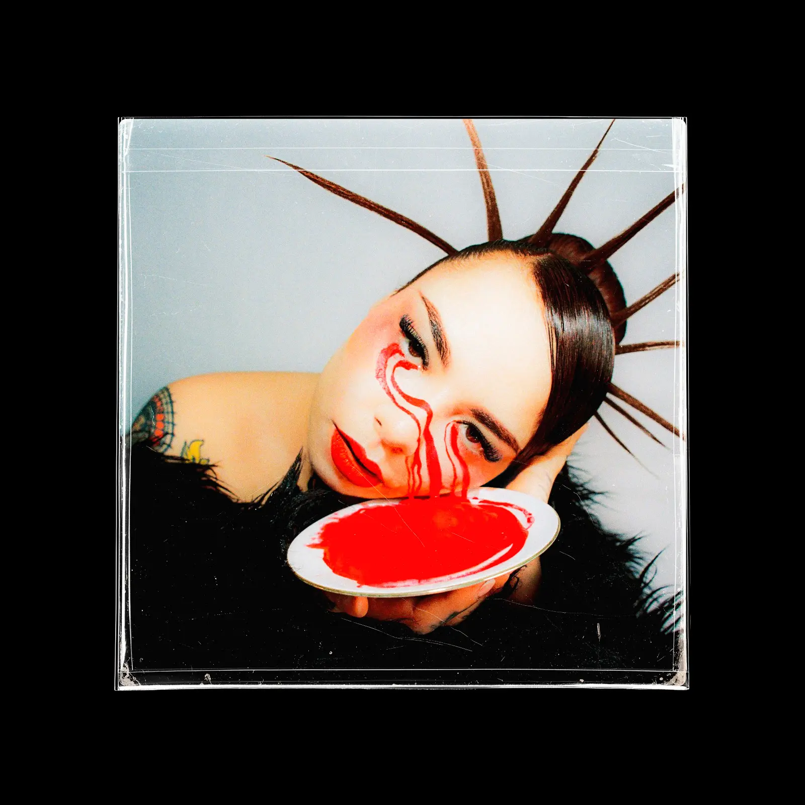
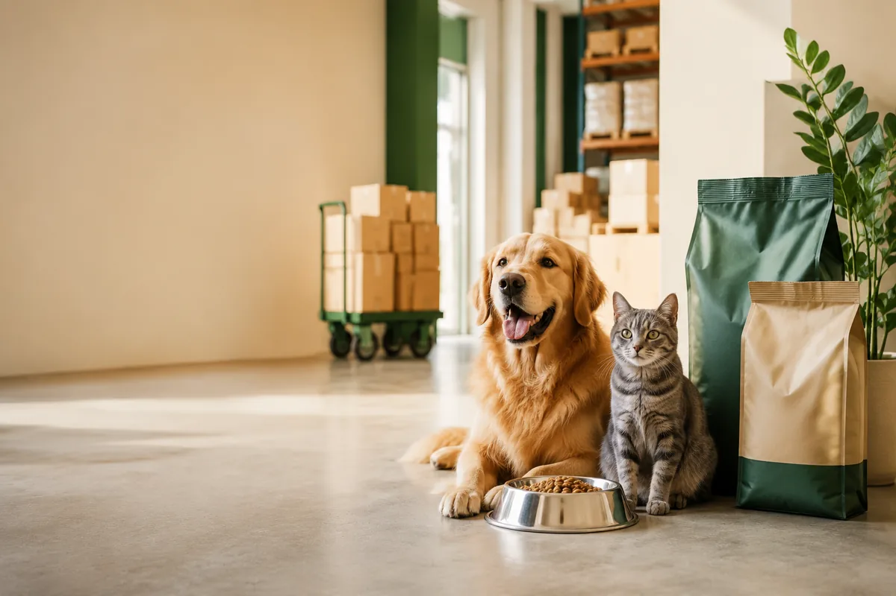
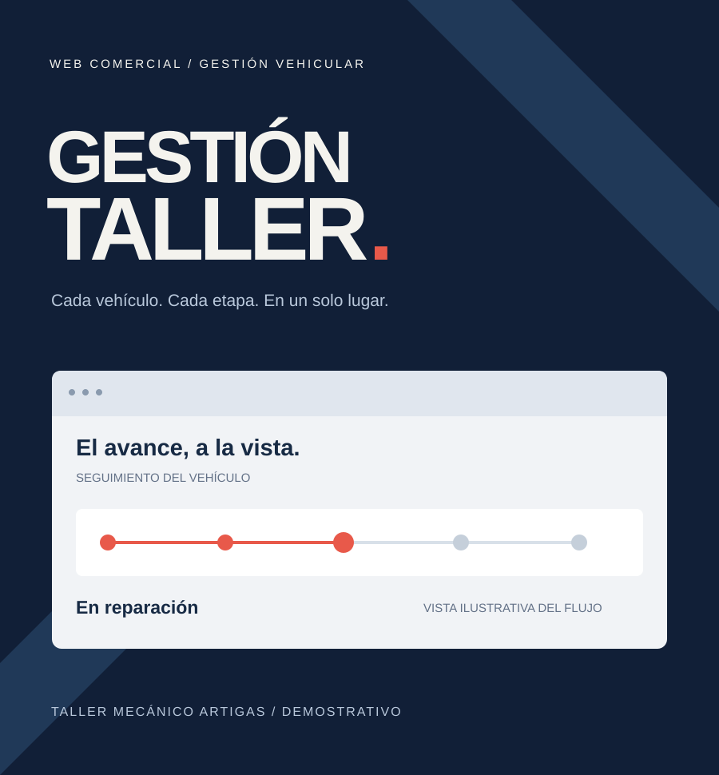
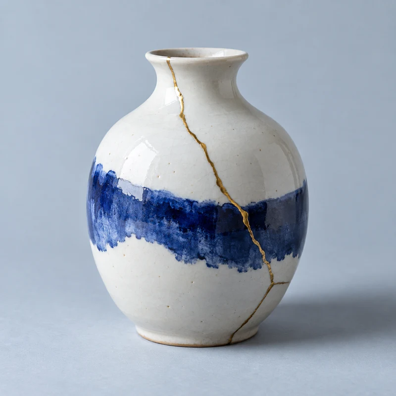

Diseño
con identidad
Colores, tipografía e imágenes que hablen de tu marca. El punto de partida es lo que hace distinto a tu negocio.
Soy Nicolás. Diseño y desarrollo webs que se sienten propias: para mostrar tu negocio y facilitar el contacto con tus clientes.
Una web pensada para tu negocio
Colores, tipografía e imágenes que hablen de tu marca. El punto de partida es lo que hace distinto a tu negocio.
Mostrar lo que ofreces, presentar tus trabajos o recibir consultas. Definimos qué necesita hacer tu web antes de construirla.
Diseño para celular y computador, movimiento con intención y un recorrido claro hasta el contacto.
Acordamos contenido, funciones, plazo y publicación. Si ya tienes una web, también podemos renovarla.
Laboratorio · pruébalo tú mismo
Elige una paleta y mira cómo cambia la página.
El diseño y la utilidad van juntos.




Qué puedo hacer por tu negocio
Una presentación que se sienta tuya.
Para que puedan explorar lo que ofreces.
Tu web puede dar el siguiente paso.
Primero conversamos sobre lo que necesitas. Después te preparo una propuesta con alcance, plazo y presupuesto.
Por dónde empezamos
¿Prefieres escribir directo?
Soy Nicolás Cortez, analista programador y desarrollador web. Cuéntame qué hace tu negocio y lo que tienes en mente para tu página.
ni.cortez@duocuc.clConversar por WhatsApp ↗¿Ya tienes una web? Compárteme el enlace para revisar qué podemos mejorar.